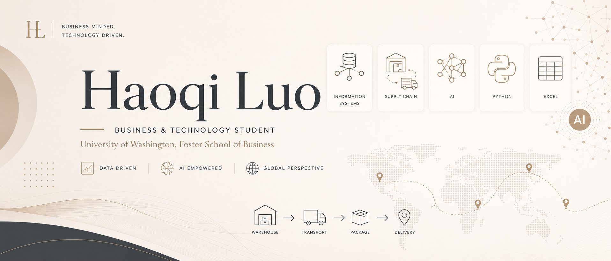

About Me
I am a Business & Technology Student at the University of Washington Foster School of Business, focused on practical analytics, information systems, supply chain, and AI-enabled decision support.
Portfolio Snapshot
A focused portfolio for information systems, supply chain analysis, and AI-supported business problem solving.

I am a Business & Technology Student at the University of Washington Foster School of Business, focused on practical analytics, information systems, supply chain, and AI-enabled decision support.
Supply Chain Analytics
Built a linear programming and forecasting model for an automotive parts distribution company to reduce driver labor costs while meeting mileage and delivery demand.
Consumer Analytics
Analyzed Gen Z shopping and money habits across spending categories, shipping preferences, income relationships, and overspending behavior.
Digital Publishing
Created a website-style digital learning publication for UW Men's Basketball content, improving structure, organization, and readability for readers.
AI Web Design
Designed a static personal website using AI-generated visual content, an animated hero video, and GitHub Pages-ready HTML and CSS.
Email: hluo7@uw.edu
Location: Seattle, WA